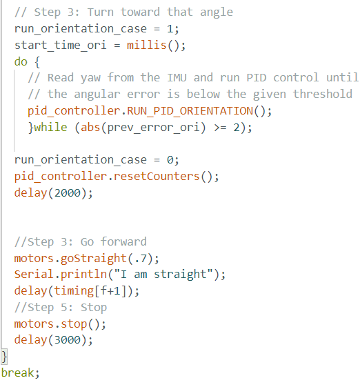
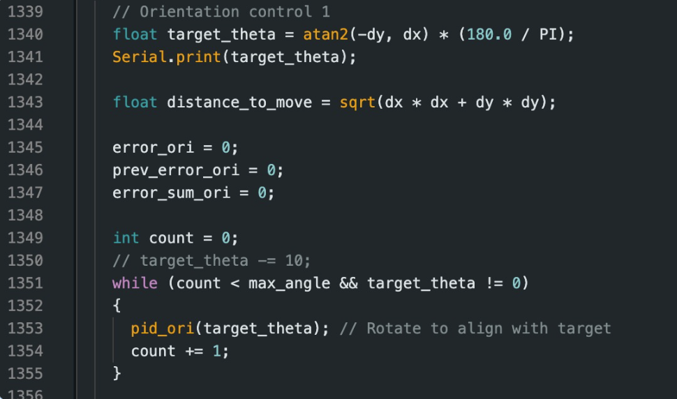
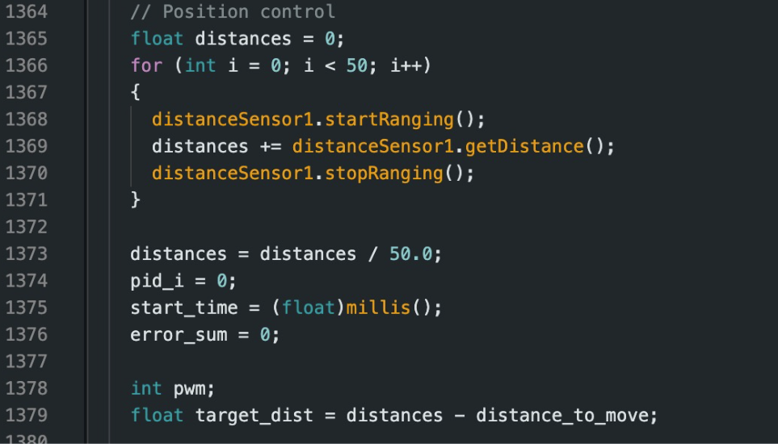
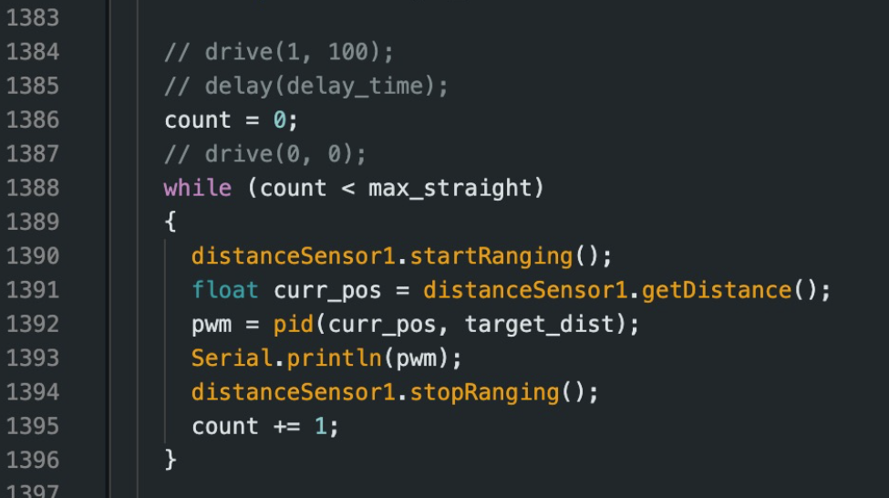

Lab 12: Planning and Execution
I worked in a group with Sana and Lulu for this lab.
Approach
So we each attemped to implement our own path planning and execution algorithm. In my case, I frist attempted to implement Localization using the Bayes Filter. However, I realize now that I was not doing the correct apprach.
Instead of programming the points that I wanted to go to in arduino, I should have been programming the points in the python script. So each time it would run, it would see if the robot was able to localize itself at the points that I wanted it to go to.
I am not sure why I did not realize this sooner, I think the reason why I hardcoded the points in arduino was because I was trying to get the robot to go to the points that I wanted it to go to and then localize itself at those points. However, that is pretty stupid because I should have just been programming the points in the python script and then running the robot to see if it was able to localize itself at those points,
and then if it was able to localize itself at those points, then I would have the robot go to the next point. If I had more time, I would have implemented this approach, and I feel like it would have been more effective. I will have to say that my robot kept messing up for one point in the map, and I would not have been able to localize the robot at that point, and ruined everything else.
In my attempt in trying to do Lab 12, I implemented the PID orientation control, but I did not implement the PID linear control. How I was able to make my robot go foward was that I would make my robot go forward for a certain amount of time. My orientation control would work perfectly, between
(-4, -3) ->(-2, -1)
(-2, -1) ->(1, -1)
(1, -1) ->(2, 3)
but would then mess up at at (2, 3) ->(4, 3). At this points, for some reason, my robot would just go crazy or just go straight and not turn at all. I am not sure why this is the case, I tried changing the PID values, but it did not work. I even normalized the angle to make sure that it was not going over 180 degrees, but it still did not work.
I think the reason why it was not working is the robot was getting confused about turning counterclockwise to reach the desired angle. I attempted to fix this by going back to my PID orientation, but like when I did angles where the robot would have to turn counterclockwise, it would work.
So, I was really confused why it would not work at this point.
Also, for MANY and MANY hours, I did not know my robot was able to do the movements that I wanted it to do OUTSIDE of the map, but once it was in the arena, it would go CRAZY and through tantrums. At frist, I thought it was becuase my robot (depresso) was camara shy, but I then realized that it was because when I was waiting for my turn to run the robot, I would have the robot already connected, and I think that when I did this it would impact the IMU readings in the beginning.
When I realized this, I would make sure that I would connect the power to the arthemis once it was at the map, and then I would connect the bluetooth to the robot. This way, the IMU readings would be correct and the robot would not go crazy on me.
Snippt of my code with BAYES:

Video my robot running with BAYES:
Snippt of my code w/o BAYES:
Video my robot running w/o BAYES:
As seen in the videos, my robot was able to go the points that I wanted it to go to, but it was for some reaon not able to turn at (2, -3) and it would go crazy. Also, you can see that my robot was able to rotate to do the localization and then go to the next point, in many of my tests, I got rid of localization since it would take a while and it would not help with the batteries that would discharge pretty quick.
My robot was not able to work and instead I worked with Sana and Lulu to get Sana's robot to work. I truly tried my best to get it
to work, but I was not able to get it to work. However, as I am writing this, I realize that I was not using the correct approach to get my robot to work, but in the future I would do the approach that I mentioned above of pre-gramming the points in the python script.
Sana's Robot (the robot is called stresso)
Sana, Lulu, and I worked together as a group. Sana was able to get her robot to work and we all helped each other out to get our robots to work.
Code for Sana's robot:




Video of Sana's robot running:
Overall, Sana's robot was able to trun at the point that I could not get my robot to turn at, which was (2,3). Also, with Sana's robot, it used PID orientation control and PID linear control.
Conclusion
Overall, I realized that I was not using the correct approach to get my robot to work. However, this class has taught me a lot about robots and how to program them with different sensors.
I worked with a group with Sana and Lulu. I also collaborated with Aiden, Henry, and Jorge where we all helped each other out to get our robots to work.